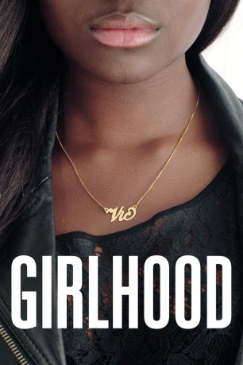

#6223 Girlhood
Alternativ: Mädchenbande
 
 IMDB-Wertung: 6.9 / 10
IMDB-Wertung: 6.9 / 10  Metascore: 0
Metascore: 0 
Marieme lebt mit Mutter, älterem Bruder und zwei Schwestern in einem Betonklotz, leidet unter dem patriarchalischen Kodex der Pariser Vorstadt. Als sie drei andere farbige Mädchen kennen lernt und sich der Gang anschließt, erhält sie den Namen Vic (nach Victoire, Sieg). Gemeinsam ziehen sie durch Paris, klauen Klamotten und genießen kleine Freiheiten. Vic wandelt sich nicht nur äußerlich, sondern reift auch innerlich zur komplexen Persönlichkeit, wendet sich gegen ein sozial vorbestimmtes Schicksal.
Jahr: 2014
Dauer: 108 Minuten
FSK: 12
Land: Frankreich Studio: PeripherTonspuren:
Untertitel:
Auflösung: 1080p (1920x800) Größe: 6912 MB
Genre: Drama
Regisseur: Céline Sciamma
Drehbuch: Stefan Kolditz
Soundtrack:
Darsteller:
 Karidja Touré als Marieme, alias Vic
Karidja Touré als Marieme, alias Vic- Damien Chapelle als Cédric
- Assa Sylla als Lady
- Lindsay Karamoh als Adiatou
- Mariétou Touré als Fily
- Idrissa Diabaté als Ismaël
- Simina Soumaré als Bébé
- Dielika Coulibaly als Monica
- Cyril Mendy als Djibril
- Djibril Gueye als Abou
- Binta Diop als Asma
- Chance N'Guessan als Mini
- Rabah Nait Oufella als Kader
- Nina Melo als Caidy
- Elyes Sabyani als Abdel
- Halem El Sabagh als Farida
- Aurélie Vérillon als La CPE
- Daisy Broom als Vendeuse boutique
- Fiona Hily als La fille du collège
- Letica Milic als Collègue Asma
- Nassereba Keita als Sweety
- Tia Diagne als Bambi
- Pierre-Marie Um'Guene als Client Monica
- Julien Arame als Garçon de la cité
- Diaby Diarra als Garçon de la cité
- Ange Eby als Garçon de la cité
- Michaël Gnahoua als Garçon de la cité
- Moussa Konaré als Garçon de la cité
- Mamoudou Koumaré als Garçon de la cité
- Liamine Soualmi als Garçon de la cité
- Diadé Soumaré als Garçon de la cité
- Marie-Pascale Boni als Fille du métro
- Ata Diambesy als Fille du métro
- Fatouma Diambesy als Fille du métro
- Assana Koulibaly als Fille du métro
- N'Deou Saounera als Fille du kebab
- Anta Sarr als Fille du kebab
- Fatou Sarr als Fille du kebab
Datei: X:\2014(G-M)\Girlhood (2014, FSK12, 1920x800).mkv seit 17.05.2017
Festplatte: HD 2013(I-Z)-2014(A-Z)
 Es gibt insgesamt 136 Filme in der Gruppe '2014(G-M)'
Es gibt insgesamt 136 Filme in der Gruppe '2014(G-M)'